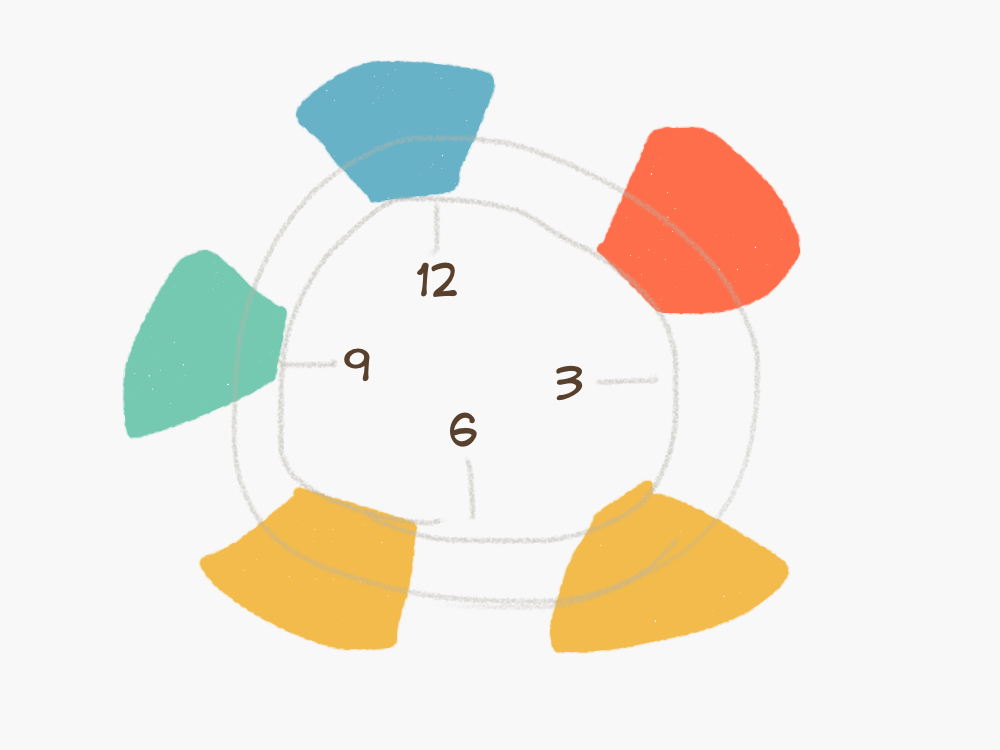
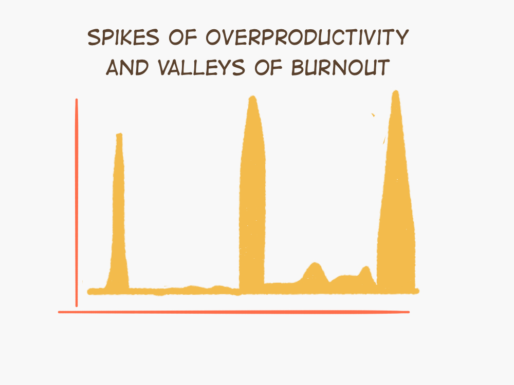
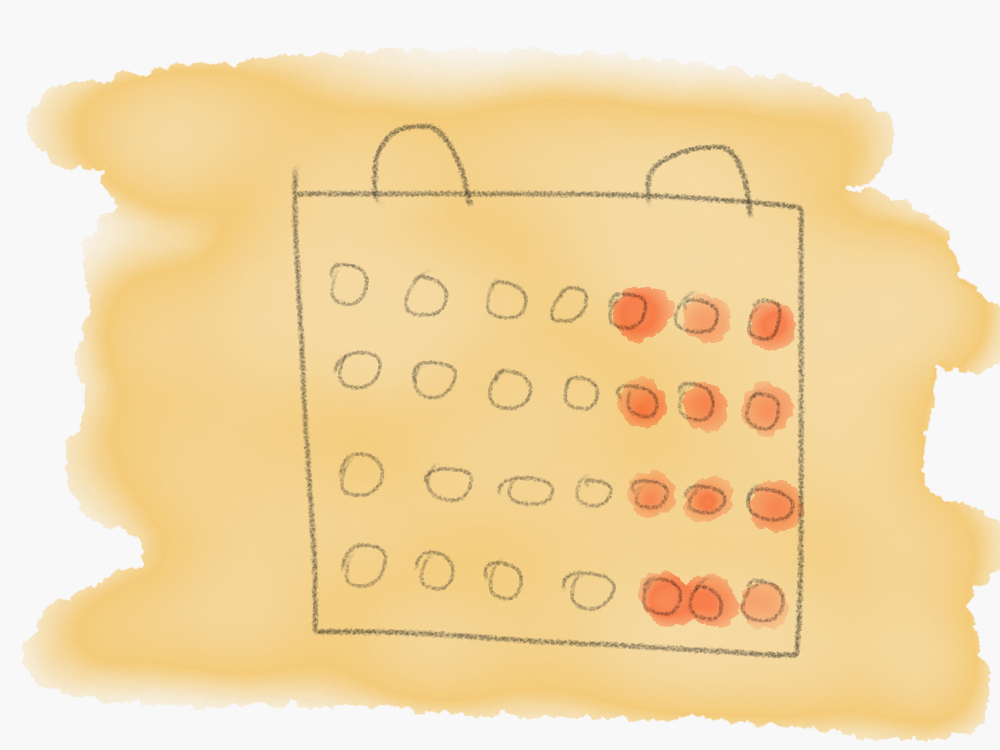
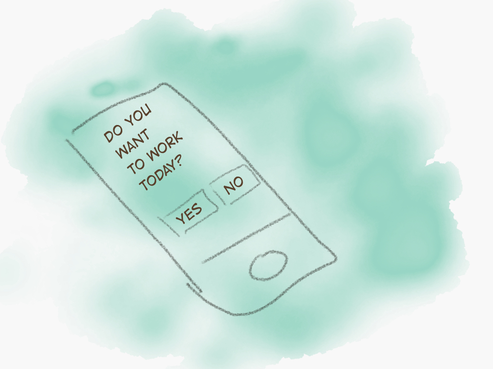

How teams can be more productive by killing 8-hour workday

If I asked you to take a good look at everyday objects around you and think of ones that don’t work and can’t be rationally explained why they are like that, what would come to your mind?
I know I’ll certainly think about medicine instruction leaflets. You know a fold-in paper that goes in a box with almost any medicine? One of those fuckers with a fine print?

Part of the reason I hate being sick has to do with the need to figure out how to take medicine.
Imagine it’d look something like this instead:

I’d probably also think about TV remote controls. There is so much complexity. There are so many buttons. Why not change this:

to look something more like this:

Having a design background, it became natural for me to train my eyes to see those things. In a nutshell, that’s the whole premises behind this blog. With knowledge and passion for both design and team dynamics, I look at the way organizations are built and try to redesign it.
Yet, when you don’t try to look for those things proactively, it’s still all too human to ignore them. In psychology, there is a concept of inattentional blindness, which shows how selective our attention is. It’s demonstrated well in this video and makes it clear how easy it can be for us to ignore the elephant in the room:
When you start thinking about it, at some point, you’ll question not just the design of physical objects, but also ideas and processes.
Things like 8-hour workday.
😿 What’s the problem with an 8-hour workday
Every time I think of an 8-hour workday and how so many organizations are religiously sticking to it, I wonder why.
What’s unique about 8 hours of work? Why was it chosen as a standard? What’s good and what’s bad with it?
⌛️ It’s outdated
Imagine you are a factory worker in an early 19th century Manchester. Every day you wake up early in the morning, say goodbye to your family and go to work. You spend 8 hours of hard soul-wrecking labor and then … spend 8 hours more of the same soul-wrecking labor. Late at night, you stumble home to say hello to your family and fall into a dreamless sleep. Only to wake up next day for another 16 hours of work.

Imagine on one of those days you hear whispers about a mill in Scotland, run by an idealistic manufacturer who talks about limiting the workday. Eight hours labor, eight hours recreation, eight hours rest, he says.
Imagine how an idea like that would sound for those broken people. There is probably nothing surprising that since 1817, when that manufacturer, named Robert Owen, started advocating for an eight-hour workday, every year millions of people went on protests to demand it.
Gradually over the years factories and companies around the world started adopting an 8 hour workday. Yet it didn’t become mainstream until 1914 when Henry Ford introduced it for thousands of his workers. It took several dozens years more for governments around the world to weave it into a protected legal requirement, thus concluding a century-old fight for better work conditions.
It’s easy to appreciate such a story. A fight of all those people led to a fundamental impact on the lives of almost all of us.
And yet today a new challenge to the status quo is required. What was once a progressive system doesn’t work anymore.
It’s outdated. It was created during the Industrial Revolution, for a very different generation of workers. Majority of them were doing blue-collar work, the quality of which could be easier judged by the number of hours one spent doing it. As the complexity of tasks increased and knowledge work became commonplace, it got harder to only rely on time-based yardsticks.
This problem could be foreseen even back when an 8-hour workday was just becoming a universal standard. In 1930, a famous British economist John Maynard Keynes was already talking about a world of 2030, in which technological growth would create an opportunity to make a 15 hour week a norm.

In today’s world quantity doesn’t equal to quality. Someone doing creative work can have a strategy-changing epiphany in 5 minutes which would easily be more beneficial than weeks of regular labor. An 8-hour workday was never designed to support a world like that.
An 8-hour workday is outdated.
🌲 It’s unnatural
Although an idea of spending 8 hours working, 8 hours relaxing and 8 hours sleeping seems logical, it’s not really how our biology works.
Biologically our productivity and energy are impacted way more by light and by our genetics than by a routine we instill.
Light creates natural cycles, or circadian rhythms, that impact how much energy we have and our genetics impacts the length of those cycles. Night owls are mostly people with longer circadian rhythms and early birds are the ones with shorter ones.

This circadian rhythm can also change over a lifetime. A person on average tends to start their life as an early bird, then transitions to being a night owl in their teenage years and goes back to being an early bird in the later life.
Our biology thus renders the concept of everyone working at the same dedicated time from 9 to 5 unnatural. Since the peak productivity is different for everyone, it leads to several problems. According to Katherine Sharkey, assistant professor at Brown University, because of the unnatural for them work hours, night owls tend to be more depressed, have a higher dependence on caffeine, and use alcohol more, while early birds tend to quickly lose focus and productivity.
An 8 hour workday is unnatural.
⚽️ It’s unproductive
If we take a look at hunter-gatherer societies of today (there was interesting research conducted among Bushmen in the Kalahari Desert in the 1960s) and paleontological evidence, turns out that our pre-agricultural ancestors spent only about 15 hours a week working. If you’ve read our previous post, there are many good reasons why hunter-gatherer societies could be an example of our organism’s optimal preferences.

Anders Ericsson, a psychologist and human productivity researcher, found that our brain’s capacity for deep work, even for top performers is under just 2 hours.
No wonder, caged in the consecutive 8-hour workday, lots of people do things that are not work-related. Many studies are showing that most of office workers aren’t working for most of the time they are at work. For example, according to a recent study by software company Workfront, U.S. employees spent only 39 percent of their time at work actually doing their jobs in 2016, down from 46 percent a year earlier. More specifically, another study of nearly 2,000 people found that an average worker spends an hour reading the news, 44m checking social media, 40m chatting about non-work-related stuff, 26m searching for new jobs, 23m takings smoke breaks, 18m making calls to parties and friends. The list goes on.
It sucks. And it eventually leads to unhappiness, disengagement and burnout. We all are prisoners of our biology and an 8-hour work system that has complete disregard for those biological preferences. This system was never designed to optimize our productivity around our optimal biological needs.
An 8-hour workday is unproductive.
🎨 It mutes creativity
A while back I saw an interesting experiment looking into effects of being stuck in a featureless white room for days. No laptop, or a phone, or a book to entertain you. No other human to talk to. A predictable, routine existence. After mere hours it became almost unbearable to function there properly.
A set 8-hour work routine, although not as extreme, has a somewhat similar effect on us. Our brain requires stimulation to be creative. An environment where the time you start and finish work is predefined doesn’t provide this stimulation. It makes it hard to come up with out of the box solutions and to react to challenges. You can’t work more around busy periods and less around slower periods. Instead, you are tied to the same deteriorating routine throughout the year.

This problem is so commonplace that it’s already manifested itself in a stereotypical scenario of someone quitting their job to follow their dreams since they got sick of the same old routine and felt mentally exhausted.
An 8-hour workday mutes creativity.
😺 What’s better than an 8-hour workday?
Usually in the design process, after you understand the problem, you move to exploring solutions. You look at how people are already solving the problem, think of new ways of doing it, try to combine and mix everything, and then you test it.
For the 8-hour workday problem, I see two main ways to solve it. Both have clear research-backed evidence showing they are better than our existing setup.
We can either work less or work smarter.
🍼 Work less
It’s funny how a stereotypical version of a productive person seems to be a Julius Caesar-like figure, tackling five different things at a time, always busy and swamped with tasks.
Truth is you are not productive when you work more. You are not at your best when you work overtime. You basically switch between modes of pushing yourself to over-productivity and struggling from a resulting burnout.

When we start working less, counter-intuitively we can consistently show high enough productivity.

Over an extended period of time, such a setup shows greater accumulated returns both for the business and for individuals, due to consistently high levels of everyone’s productivity.
Research shows that regardless of background (from scientists to violin players) people who spent 25 hours working were not more productive than those working 5. And those working 35 were actually twice less productive than people working just 20 hours.
Although most researchers seem to agree that working less can be a better solution to how we work, there is no compromise around the way to achieve that. Some researchers believe limiting the number of days you work is the key, some state that limiting the number of hours is a better solution and others say that work hours should not be defined at all.
🕰 Work fewer hours
Alex Pang, a researcher in this field states that a 4 hour workday is actually biologically most optimal for jobs that require thinking and concentration.
The logic for limiting hours while maintaining a five day week lies in the maintenance of focus. If we use the maximum amount of our productive time, split between multiple days, we’ll be able to maintain the optimal productivity without going beyond our limits.

Experiments around this idea show a lot of positive results. Recently Sweden did a 6-hour workday pilot at one of its nursing care centers. After 18 months it showed an overwhelmingly positive reaction from the participants leading to less sick leaves logged, reported better perceived health and boosted productivity in the form of organizing 85% more activities for their patients.
Similarly, when the founder of Tower Paddle Boards cut the workday from eight hours to five, he saw an increased perceived happiness of the team and a 42% increase in revenue after a year.
Working 50% or 75% of current work hours can be a way to use the maximum amount of productive time while being able to maintain that level of focus and productivity long term.
🗓 Work fewer days
The idea behind working fewer days while maintaining a more standard 8-hour day is to give people enough time to relax and recharge
You can think of it as having a mini-vacation every week.

Ryan Carson, the founder of Treehouse, says his team became more productive and happy after they switched to 32-hour work week back in 2006.
Even big companies are experimenting with it. For example, Amazon is implementing both shorter days and shorter weeks. Over a year ago they began an experiment where several dozens of employees started working from 10 am to 2 pm and only from Mon to Thu.
Although they haven’t released any data publicly, most scientists agree that a setup like that would likely make people more refreshed and less stressed.
👍 Work as you wish
Another way to approach it is to get rid of fixed work hours entirely and instead give each person ability to choose their own flexible schedule. It would allow to choose the time of the day and the number of hours that work best for you.

At the same time, considering that such an approach would primarily rely on self-discipline, it can become problematic to maintain. Many people may default to working more than they should since in most of today’s societies overtime is assumed to be a badge of honor.
Still some organizations have setups like that. For example at Crew the team doesn’t work set hours, leading to a happier and more productive environment.
Regardless of the approach you choose towards reducing the number of hours at work each week, the overarching research shows that working less leads to increased productivity, creativity and happiness.
🤓 Work smarter
Sometimes how long you do something can be less important than how you do it. Changing the very structure of our workday on the level of each individual can be a solution for the how.
Back in 2014, in the course of a study a tech company Draugiem Group found that the way people structured their day had a more important effect than the length of the workday.
They measured how much time each person spent on various tasks and how productive they felt doing it. It turned out that people who regularly took short breaks were way more productive than those who worked uninterrupted long hours.

The ideal average work-to-break ratio turned out to be 52 minutes of work, followed by 17 minutes of rest. People who stuck to that schedule were able to maintain focus for roughly an hour at a time and when they felt first signs of fatigue, they spent roughly 20 minutes resting – going for a walk, reading a book, eating a snack or chatting with their colleagues.
A complete separation from work during those periods of rest was immensely crucial as people who failed to do that, by not entirely removing themselves from the laptop and work, had more troubles being productive in the consecutive periods.
A system like that could be easily implemented from the bottom-up, on the level of each individual, without requiring a change across the whole organization. To start an experiment, you only need to break up your day in hour-long focus intervals, during which you focus on the crucial tasks at hand, ignoring everything else, followed by 20 minutes long breaks.
It could also be flexibly introduced both as an alternative solution to the 8-hour workday problem or as an additional solution on top of working less.
At the same time this ease, flexibility, and self-reliance can make it hard to maintain this smarter work schedule, as one company that tried this approach found out.
The 52:17 formula may not be the panacea. Maybe you can find something like a pomodoro technique more applicable for you. Or maybe working smarter may not mean following a preset recipe at all. Yet this approach, grounded in the way our focus works can be a good first step on the path towards a happier and more productive work life.
🌅 Conclusion
I always enjoyed the thought that we are never the same. Atoms in our body, our thoughts and experiences, everything is different from what it was a moment ago. Similarly, our processes should not always stay the same. We need to experiment and question our assumptions since things that worked a while back can become deteriorating later on.
Such an experiment can be easy to start. In his book Hypergrowth, David Cancel, ex-VP of Product at Hubspot shared a story of how he wanted to find a better way for the team to work and so he proposed to limit teams to 3 people. Why 3? That just seemed like a good enough number to start. You see, it’s essential to commit to something to kick off the process. It’s easy to spend all time and effort discussing and fighting over an optimal number, but the truth is you don’t know what it is. The only way to find that number is through experimentation. Committing to a random number that makes sense is the right course of action as long as you stay conscious that it was a random number in the first place and keep experimenting.
8-hour workday was a great innovation 100 years ago that enabled decent work-life balance for billions of people. It was that random number that made sense. 8 hours for work, 8 hours for leisure and 8 hours for sleep. But it looks like we forgot that it was a random number just to start an experiment, not an optimal one. It’s time we find something better.